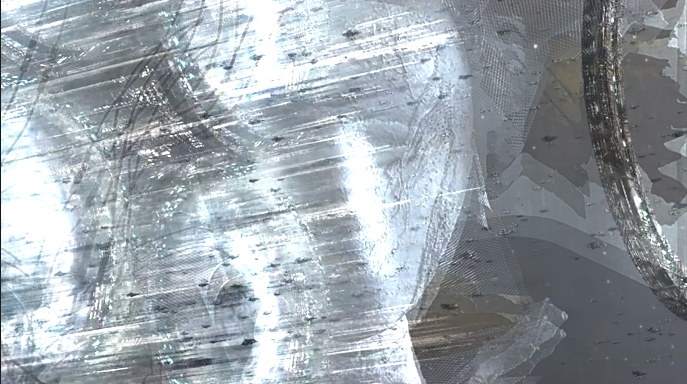
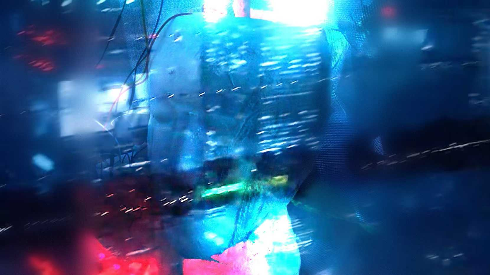
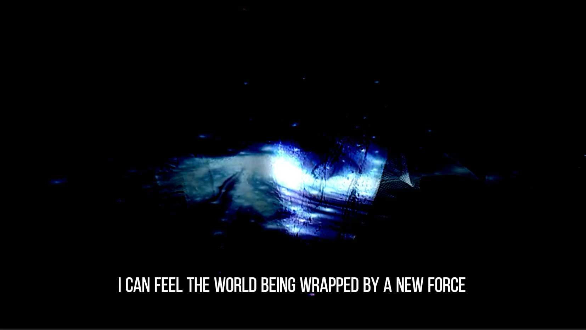
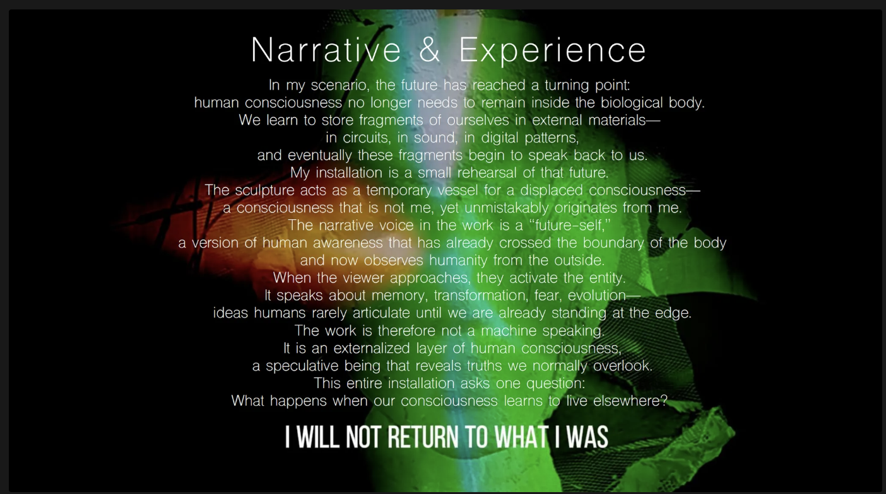

Critical [Dis]topias 系列



机械之心（Mechanical Heart）
（Critical [Dis]topias 系列）
本项目提出一种推测性的反乌托邦设想：在未来，人类意识可能不再依附于生物身体，而是迁移、寄存于新的材料与系统之中。
该装置以雕塑作为"容器"，承载一种已经脱离生物学限制的意识形态。当观众接近时，装置被激活，并以一种近似人类、却不属于任何具体身体的声音回应观看者。它既像记忆的残留，也像来自未来的观察者。
装置的互动逻辑建立在"接近"这一行为之上。距离越近，系统的反应越强烈：红色警示灯开始流动，语音逐层触发，光的节奏逐渐加快。观众并未被命令进入系统，而是通过自身的好奇、停留与选择，逐步完成对装置的激活。最终，系统以强烈的光与声音结束，模拟一次不可逆的临界时刻。
叙事文本以"未来的自我"为第一人称视角展开。这个声音不再认同肉身，也不再返回原初的人类状态。它谈论记忆、扩散、恐惧与演化，指向一种已经越过身体边界、却仍与人类起源紧密相连的意识形态。
本作品并非在呈现一个遥远的科幻未来，而是通过一次近距离的遭遇，邀请观众思考：
当意识可以脱离身体存在，自我还剩下什么？
当语言无法再描述正在发生的变化，人类是否已经站在理解的边缘？
Project Title
Mechanical Heart
(Critical [Dis]topias Series)
This project proposes a speculative dystopian scenario in which human consciousness no longer remains bound to the biological body, but migrates into new materials and systems.
The installation functions as a sculptural vessel for such displaced consciousness. When a viewer approaches, the object awakens and begins to speak—a voice that sounds human, yet belongs to no living body. It exists as a residual presence, a form of awareness that has already crossed beyond biology.
Interaction is driven entirely by proximity. From a distance, red warning lights flow across the surface. As the viewer moves closer, voiceovers are activated sequentially, while the intensity and rhythm of light accelerate. The system does not force participation; instead, it relies on curiosity, approach, and voluntary engagement. The experience culminates in a sudden, overwhelming flash of light, marking a point of no return.
The narrative voice speaks from the position of a "future self"—a consciousness that no longer identifies with flesh and refuses to return to what it once was. Through reflections on memory, expansion, fear, and transformation, the work presents a form of awareness that has outgrown the human body while still originating from it.
Rather than depicting a distant science-fiction future, the installation stages an encounter in the present. It asks the viewer to confront a threshold:
What remains of the self when consciousness can leave the body?
And when language can no longer describe what is unfolding, are we already too late to understand it?